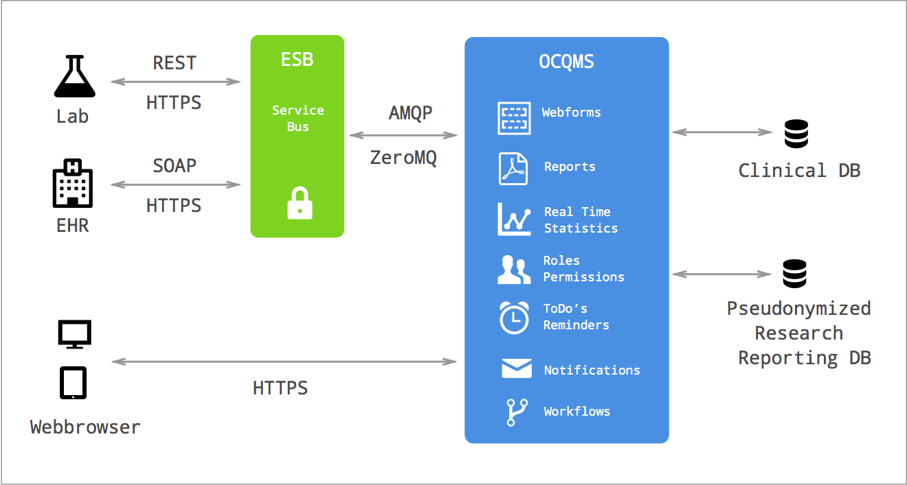
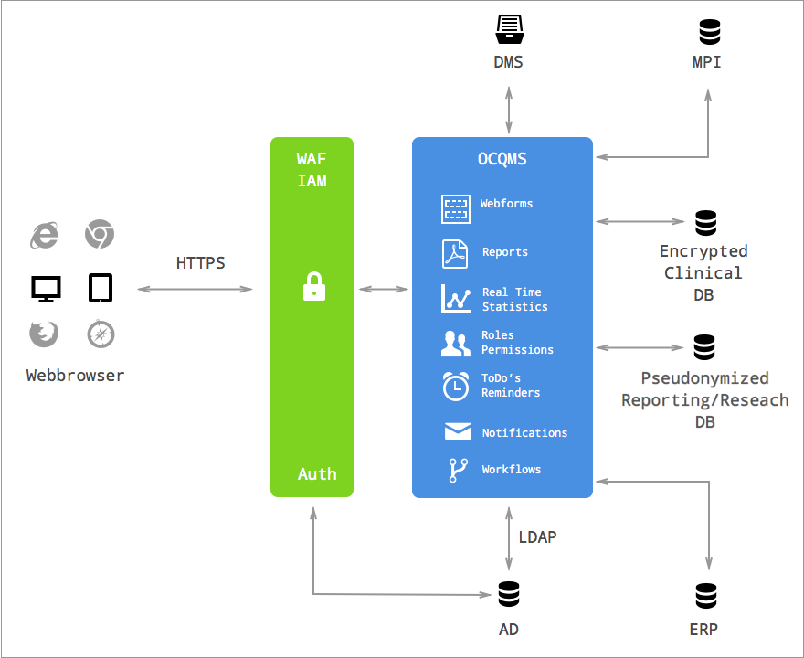

Blog
Agile Denkwerkzeuge: «Integrität einbauen»
Perceived integrity means that the totality of the product achieves a balance of function, usablity, and economy that delights customers. Conceptual inegrity means that the system’s central concepts work together as a smooth, cohesive whole. (Poppendieck 2003)
Integrität (integrity) ist ein breiter Begriff und beinhaltet viele Aspekte wie Unversehrtheit, Intaktheit, Vollständigkeit, Richtigkeit oder Seriosität.
Es lassen sich zwei Dimensionen von Integrität eines Produktes herausarbeiten: konzenzeptionelle Integrität (conceptual integrity) und perzeptierte Integrität (perceived integrity).
Konzeptionelle Integrität
Konzeptionelle Integrität meint, dass die einzelnen Komponenten eines System ganzheitlich aufeinander abgestimmt sind und im Zusammenspiel optimal funktionieren. Das System soll flexibel, wartbar, effizient und anpassungsfähig sein. Das Desgin und die Bedienbarkeit sollen durchgängig konsistent sein und die Software muss den fachlichen Anforderungen (business problems) gerecht werden.
Perzeptierte Integrität
Die pezeptierte Integrität umschreibt die Wahrnehmung des Systems durch den Anwender. Dazu zählt alles was der Nutzer in der Interakeraktion mit dem System erlebt; von der Funktionalität, über die Benutzerfreundlichkeit bis zu den nicht-funktionalen Aspekten.
Interne perzeptierte Integrität
Programmierer sehen sofort und wissen instinktiv, ob eine Software integer ist (free from flaw, defect, and decay). Die interne perzeptierte Integrität lässt sich durch XP Praktiken bewahren (test driven development, refactoring, continous integration, eliminating code smells and antipatterns).
Externe perzeptierte Integrität
Der Benutzer des Systems nimmt bewusst und unterbewusst wahr, ob eine Software integer ist. Ganz zentral für ein gutes Benutzererlebnis sind nicht- funktionale Anforderungen wie Performance (maximum response time) und Benutzerführung (user flow). Für die externe pezeptierte Integrität wichtig ist auch eine gute Informationsarchitektur sowie die sorgfältige und konsistente Verwendung von Begrifflichkeiten und Bezeichnungen.
Konzeptionelle Integrität als Voraussetzung
Konzeptionelle Integrität ist die notwenige aber nicht hinreichende Bedingung für perzeptierte Integrität. Es ist also nicht möglich eine Software zu entwickeln, welche als integer wahrgenommen wird (perceived integrity), ohne dass sie auf der konzeptionellen Ebene (conceptual integrity) die Anforderungen erfüllt.
Integrität lässt sich nicht im Nachhinein in eine Software einbauen. Sie entwickelt sich zu einem Wesensmerkmal des Systems. Das Einbauen von Integrität muss über den gesamten Entstehungs- und Entwicklungsprozess einer Software im Fokus stehen.
Wir entwicklen qualitativ hochstehende Software. Dazu setzen wir auf die besten Open Source Entwickler-Tools und arbeiten gemäss Agiler Methodik.
Literatur
- Poppendieck Mary, Poppendieck Tom (2003): Lean Software Development: An Agile Toolkit
- Andrew Stellman, Jennifer Greene (2014): Learning Agile
Libres - Python Reservation Library
Not a replacement for Outlook or Google Calendar, but a library to manage reservations in the following use cases:
- Manage meeting rooms in a company. Users reserve the rooms themselves without an authority confirming/denying their reservations.
- Manage nursery spots. Parents apply for a spot in the nursery for their kid. Someone at the nursery goes through the applicants and decides who gets the spot. Parents may add an application to the waitinglist.
- Manage community facilities. Citizens see the availability of facilities online and call the municipality to reserve a facility. The management is done internally (maybe through an already existing software). A readonly calendar shows the state on the website.
Libres as such does not provide any user interface for reservations. That is the job of other projects depending on Libres.
Documentation | Source | Bugs
Health Data Service Bus
The health data service bus is based on a service oriented architecture (SOA). It exposes webservices such as SOAP or REST as service providers. The message format can inlcude all forms of common data exchange formats such als XML (HL7 V3) or JSON.

Learn more about OCQMS: www.healthdata.ai
Übersichtliches Formular für die Familienanamnese

In der neuen Version von OCQMS wurde die Familienanamnese noch übersichtlicher gestaltet.
Die Anforderungen an ein Formular zur Familienanamnese:
- Erkrankungen Vater, Mutter, Geschwister, Gruselten, Kinder
- Das Formular ist nach Krankheiten strukturiert.
- Es kann erfasst werden, wenn eine Krankheit nicht aufgetreten ist.
- Ist eine Krankheit aufgetreten, so wird dazu eine Alterskategorie erfasst.
- Das Formular bietet einer Liste von Krankheiten, deren Auftreten erfasst werden soll. Fehlende Angaben werden markiert.
- Zu jeder Krankheit kann eine Notiz erfasst werden.
- Es können weitere Erkrankungen, welche nicht auf der definierten Liste sind hinzugefügt werden.

System Integration via APIs
OCQMS offers APIs to integrate the application into different software environments. Application programming interfaces (API) are widely considered to be the most flexible and robust way to integrate different software applications.

- WAF: Web Application Firewall
- IAM: Identity and Access Management
- DMS: Document Management System
- MPI: Master Patient Index
- AD: Active Directory
- ERP: Enterprise Resource Planning
Learn more about OCQMS: www.healthdata.ai